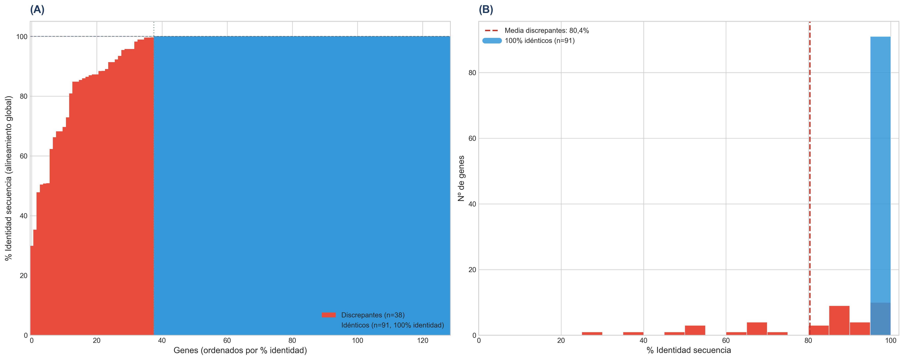
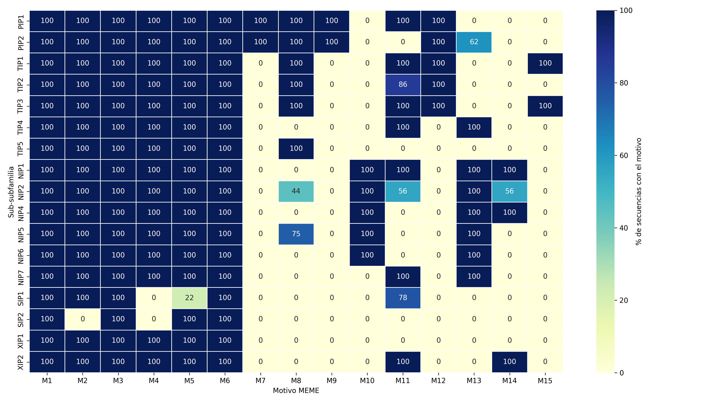
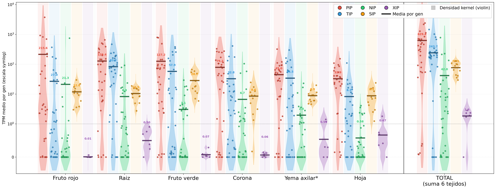
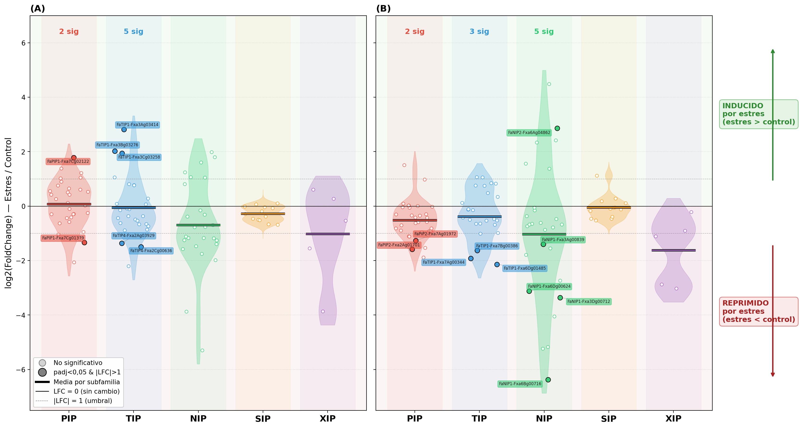
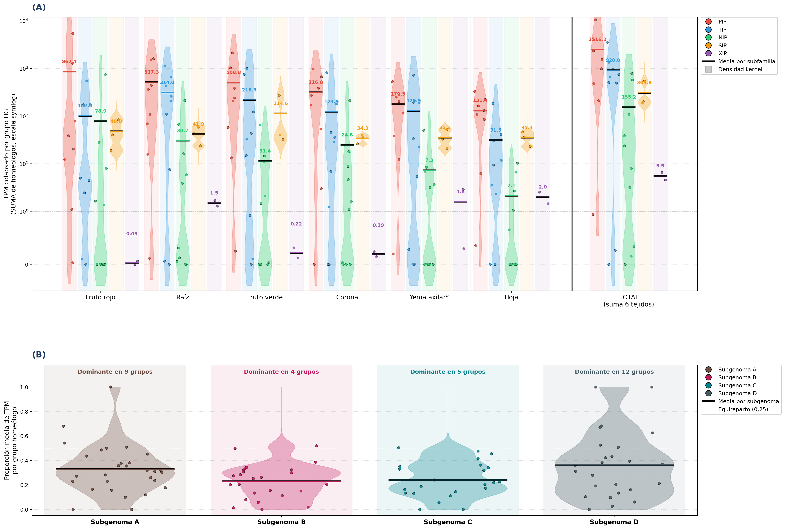
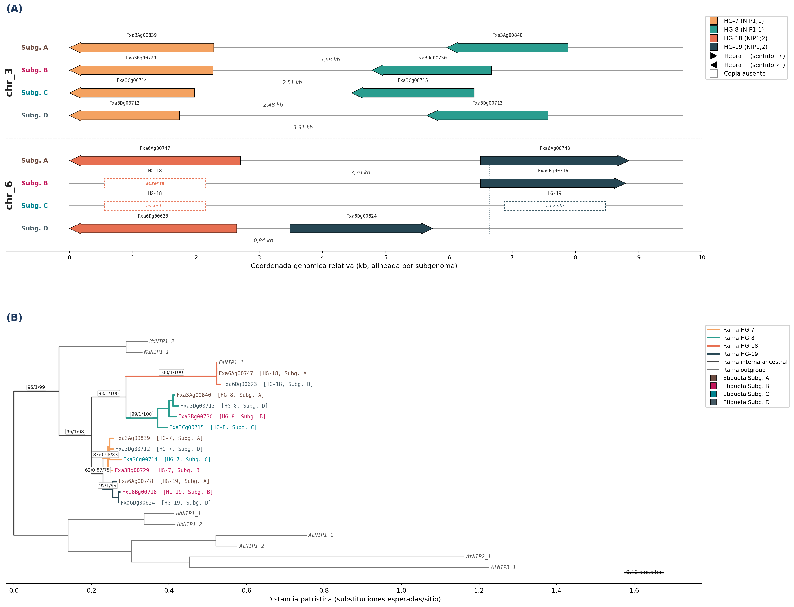

La cuenca mediterránea perderá hasta un cuarto de su disponibilidad hídrica hacia 2050, con sequías más frecuentes y rendimientos agrícolas a la baja.
93 %
de la superficie nacional de fresa.
35 %
de la producción europea.
Suelos arenosos, baja retención hídrica, riego constante. La fresa de Huelva opera con un margen muy estrecho frente al déficit hídrico y al acuífero de Doñana.
6 hélices transmembrana + 2 hélices reentrantes. Plegamiento "en reloj de arena". Poro de ~3 Å.
Dos motivos NPA en el centro del poro · filtro ar/R aromático/arginina.
Tetrámero con cuatro poros independientes en la membrana.
El cultivar es aloctoploide: cuatro subgenomas (A, B, C, D) procedentes de progenitores diploides distintos. Cada acuaporina ancestral aparece hasta cuatro veces en el genoma.
El inventario incluye solo PIP, NIP y TIP. Las subfamilias SIP y XIP no se han descrito en el cultivar.
tblastn · NCBI BLAST+
Alineamiento de las 576 secuencias query contra el genoma de F. x ananassa 'Benihoppe'. Localiza regiones homólogas, ignorando intrones.
BEDtools · sort + merge + slop
Los hits fragmentados por intrones se fusionan a menos de 3 kb y se extienden 1 kb a cada lado para capturar el ORF completo y sus señales reguladoras.
Exonerate · protein2genome
Reconstruye la estructura exón-intrón, respeta sitios de splicing y recupera el ORF completo. Configurado al máximo de sensibilidad.

DeepTMHMM
Predicción de hélices transmembrana — descarta secuencias parciales y monómeros aberrantes.
MAFFT + MEME
El alineamiento revela deleciones internas; los motivos verifican los NPA canónicos y la firma por subfamilia.
IQ-TREE · preliminar
Árbol exploratorio que aísla clados marginales y ramas anormalmente largas — síntoma de fragmentación.
Pepstats · Biopython
pI, peso molecular, GRAVY, estructura secundaria — 34 descriptores agregados en un PCA.
Una candidata cae si falla en cualquiera de las capas. La convergencia de los filtros — no su suma — es lo que permite separar 121 acuaporinas estructuralmente viables de 23 parciales y 3 entradas no canónicas.
PC1 + PC2 explican el 54,1 % de la varianza. NIP, TIP y SIP se separan con nitidez. PIP y XIP comparten espacio (misma membrana plasmática).
15 parciales caen fuera de la elipse de su subfamilia. Las 8 restantes son atípicas detectadas por los otros filtros (topología, MAFFT, árbol).
Cuatro filtros, anomalías distintas, sin redundancia.
Predominio de NIP — 30,6 % del catálogo — coherente con la dinámica de expansión de NIPs descrita en otras especies vegetales con duplicación en tándem.
Los controles literarios FaPIP1;1, FaPIP2;1 y FaNIP1;1 caen sobre sus copias predichas en la rama esperada, con longitud de rama cercana a cero.
Copias de PIP por gen ancestral de F. vesca. Cuadruplicación esperable, atenuada por fraccionamiento.

M1 — el motivo que codifica el NPA del bucle E — aparece en el 100 % del catálogo. M3 y M6, dos hélices transmembrana, completan el núcleo universal.
FaSIP1;3 conservan NPS en las 7 copias — variante también en Prunus armeniaca: posible firma Rosaceae.

Pico absoluto: Fxa7Cg02122 (FaPIP1;1) en fruto rojo · 3.748 TPM. 11/12 SIP detectables en los 6 tejidos.

Hoja: 4 ↑ · 3 ↓ · cuarteto FaTIP1;7 inducido. Raíz: 1 ↑ · 9 ↓ · cierre hidráulico neto. Sin solapamiento entre tejidos.

El subgenoma D es dominante en el 40 % de los grupos — patrón cultivar específico, no extrapolable a otros F. x ananassa.

HG‑07 + HG‑08 en tándem en los 4 subgenomas.
Distancia 0,30 sub/sitio.
HG‑18 + HG‑19 en tándem en A y D · pérdidas heterogéneas en B y C.
Distancia 0,41 sub/sitio.
El árbol agrupa los pares y separa los tándems entre sí: la duplicación es ancestral, prepoliploide.
Proyecta el TPM agregado de cada grupo homeólogo sobre un esquema anatómico de F. x ananassa, con desglose por subgenoma.
HG‑21 · FaTIP1;1 — cuarteto completo dominante en yema axilar, con dominancia del subgenoma A.
Primer catálogo curado, filogenia validada, mapa transcriptómico, pipeline reproducible.
Preguntas, por favor.